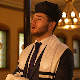

The life, training, and soulful musical style of Cantor Heimann

Cantor Shmuli Heimann is recognized for his soaring lyrical tenor voice and his emotional depth in rendering Jewish prayers. He blends classical operatic vocal training with a deep respect for traditional synagogue Nusach (liturgical prayer modes).
Shmuli began his musical training early under noted cantors, mastering classical voice production and the specific nuances of Ashkenazic prayer composition. Over his career, he has led prayers for prestigious congregations, and performed on international stages.
His mission is to move and inspire listeners. Whether performing a complex composition by classical cantors like Yossele Rosenblatt, or singing popular Jewish songs at a wedding canopy, Shmuli delivers each note with absolute sincerity.
Leading Shabbatons and High Holiday davening. Cantor Heimann engages congregations, leading traditional prayers with majestic Nusach and classic cantorial compositions.
Providing beautiful entry songs and blessings under the wedding canopy, tailored to your family's musical traditions.
Performing select classical cantorial music, Yiddish tunes, and Hebrew songs for banquets, fund-raisers, and community celebrations.